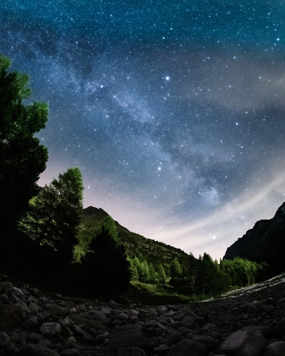
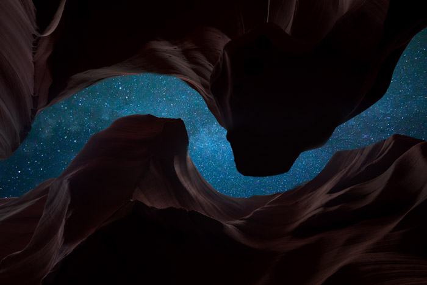
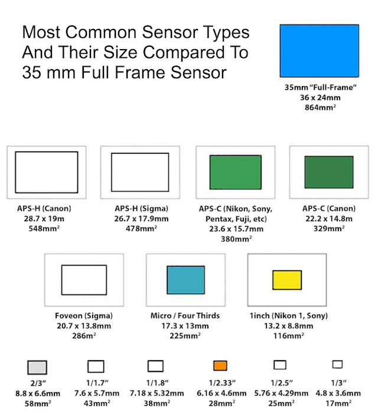
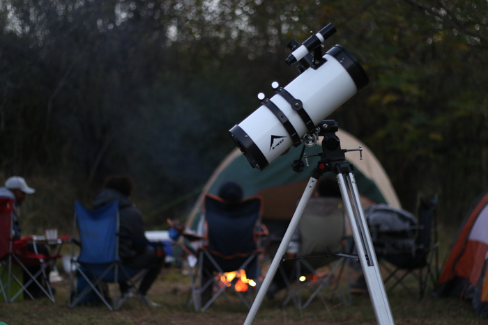

strophotography is a magical photography genre that allows you to take a closer look of the starry night above. Photographing the night sky and all its wonders is as close as many of us will get to being out there. All you will need is a little training.
strophotography is a magical photography genre that allows you to take a closer look of the starry night above. Photographing the night sky and all its wonders is as close as many of us will get to being out there. All you will need is a little training.
To put it simple, astrophotography is photographing astronomical objects. These might be the moon, planets, and stars, but also nebulae and The Milky Way.
There are several types of astrophotography you can pursue. Our article will go through them all.
Photographs which get taken with a telescope of objects far away into the night sky. These are the beautiful images of interesting nebulae and distant galaxies. This style would include the most complicated and technical aspects of astrophotography.
Here, you need to think about star trails as a challenge to overcome. Also consider telescopes, light pollution, editing software and other pieces of equipment.
Everything within our own solar system, such as our moon, our sun and the planets that circle around it. Here you can use a telescope. But you can also use a multitude of telephoto lenses to get stunning results.
This is a type of astrophotography that uses a wide field of view, such as wide and super-wide lenses. These images include night landscapes with the Milky Way in the background.
Capturing star trails is also another great subject. This area is very accessible and the least technical.
Time-lapse is an extension of the wide-angled astrophotography. This requires you to take many exposures over a period of time and then combine the images to create a video. This is also a great technique for star trail images.
There are many different camera types for every photography genre. Astrophotography is no different. There are the standard DSLRs, either full-frame or cropped.
The mirrorless systems and even your smartphone could give you some great shots. There are even specialized Astrophotography cameras designed to capture the skies.
Each camera has its benefits, so try using what you have before you think about other systems.
When it comes to the sensor, is it better to photograph the sky with a crop or full-frame? There is no simple way to answer this, as both have benefits and downsides.
A crop sensor magnifies the full-frame lens you are using. A Canon 7D (crop sensor) with a 300mm telephoto lens (full-frame), the magnification of the focal length is 1.6 times.
The 300mm lens converts to 480mm with this DSLR. The benefit here is that you are now closer to the object you would like to photograph.
But, this could be a problem when paired with a telescope. You might even be too close to photograph the subject in one shot.
With a full-frame sensor, the quality is higher and the digital noise will be lower. Yet, these cameras are very expensive compared to their siblings, the crop sensors.
Choosing to use a telescope over a telephoto lens might have benefits. It comes down to what you want to use it for.
A telescope is an extra piece of equipment, which is an extra expense if you don’t already own one.
For this to be worth it, you will have to use it quite a few times. Try to borrow one first to see if it fits your astrophotography needs.
If you are looking to capture deep space subjects, a telescope is a perfect tool. You will need an adapter to be able to connect your camera.
This also means you can photograph the moon with your smartphone.
Yet, if you own a crop sensor DSLR and 300mm lens, the 1.6x magnification will give you 480mm focal length. This is the same as most telescopes, and they even work on an f/6 aperture.
